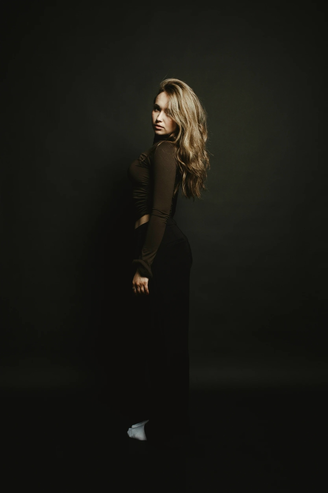

Иванова Арина Михайловна
Руководитель студии танцев «Luxxx»
Родилась: 8 апреля 2004 года.
Арина Иванова — талантливый хореограф и организатор, основательница студии танцев «Luxxx». С детства увлечённая танцами, она превратила свою страсть в профессию и создала пространство, где каждый может найти свой стиль и раскрыть потенциал через движение.
Образование и опыт: окончила хореографическое отделение Колледжа искусств (2024, с отличием); прошла международные мастер‑классы у топовых хореографов Европы и США; 3 года преподаёт современные направления танца (hip‑hop, high heels, vogue); подготовила более 50 учеников к участию в городских и региональных конкурсах.
Миссия: сделать танец доступным и вдохновляющим для людей любого возраста и уровня подготовки.
Для перехода на главную страницу нажми СЮДА